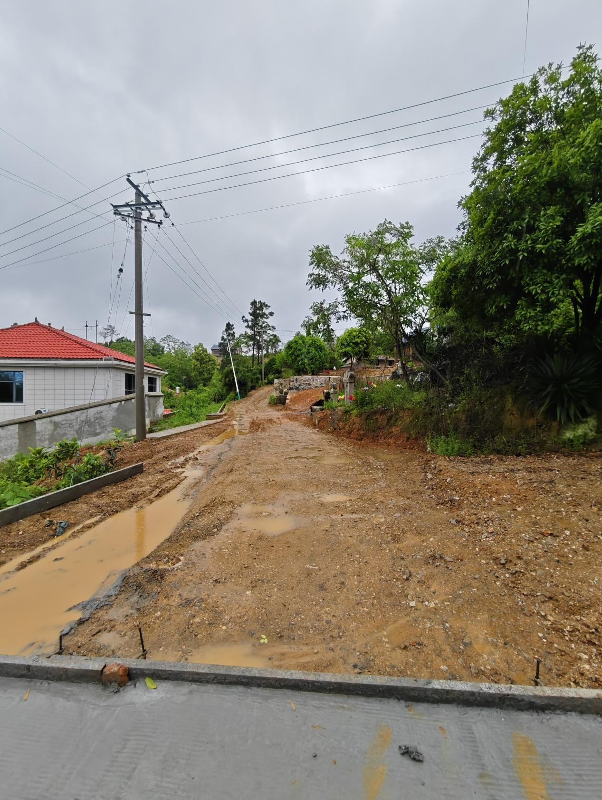
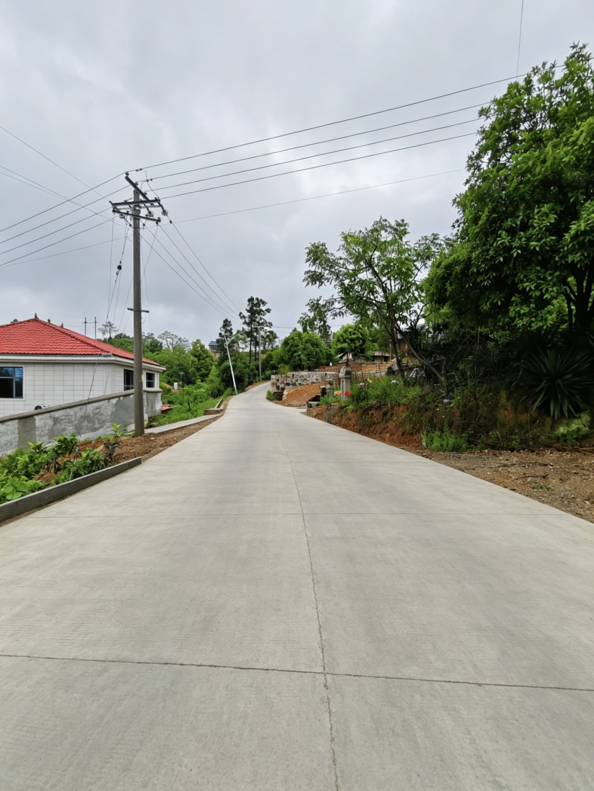

道路焕新畅民心 铺就乡村振兴幸福路——仁家坪新村荷叶塘片村道改造工程顺利完工通车
路通百业兴，道畅民心顺。为切实改善村内交通出行条件，补齐乡村基础设施短板，破解群众出行难题，助力乡村振兴高质量发展，经过前期精心筹备、科学施工、全力攻坚，近日，仁家坪新村重点民生工程——荷叶塘片区村级道路升级改造项目全面竣工，正式实现通车通行，崭新平整的乡村道路，为全村群众铺就了一条便民、致富、舒心的幸福大道。
据悉，原仁家坪新村村级主干道及村组支路建成时间久，路面常年泥泞难行，不仅严重影响村民日常出行、生产运输，也制约了村内产业发展和村容村貌提升，是长期困扰群众的民生难题。


为切实回应群众急难愁盼，打通便民出行“最后一公里”，仁家坪新村“两委”高度重视、主动作为，多次实地勘察、走访调研、征集民意，积极对接上级部门争取项目与资金支持，科学制定道路改造实施方案。项目推进过程中，村“两委”干部全程跟进、靠前指挥，严格把控工程质量、施工安全和建设进度，常态化深入施工现场督导检查，及时协调解决施工过程中土地协调、施工扰民、交通疏导等各类问题。
此次村道改造工程的顺利完工，彻底改变了原有道路破损、拥堵、难行的老旧面貌。改造后的村道宽敞平整、干净通畅，路况颜值大幅提升，彻底解决了村民出行颠簸、雨天积水、通行不便的问题，极大改善了全村道路交通条件，切实提升了群众出行的安全性、舒适性和便捷性。平整畅通的道路不仅方便了村民日常通勤、学生上学、物资运输，更有效打通了村内农产品外销、产业发展的交通壁垒，为村级特色产业发展、乡村旅游培育、集体经济增收奠定了坚实的交通基础。
一条条乡村道路，是联通千家万户的便民路，更是助力乡村振兴的致富路、幸福路。道路的焕新升级，不仅完善了村内基础设施体系，优化了人居环境，更拉近了党群干群距离，切实提升了村民的获得感、幸福感和安全感。
下一步，仁家坪新村将以此为契机，持续聚焦民生实事，紧盯群众需求，常态化做好村内道路管护、环境卫生整治等后续工作，健全道路长效管护机制，全力守护来之不易的建设成果。同时持续补齐乡村基础设施短板，深耕乡村产业发展、人居环境提升、基层治理提质等重点工作，以实干办实事、以实效惠民生，持续激活乡村发展活力，为全面推进乡村振兴、建设生态宜居、和美富裕的新仁家坪筑牢坚实基础。